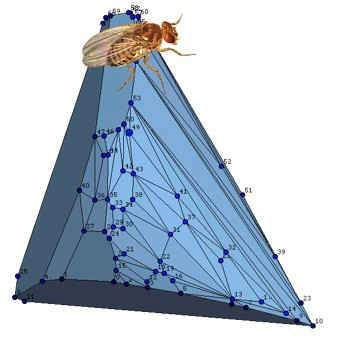

The Pachter Lab develops computational and experimental methods for genomics. We are currently focused on the development of single cell sequencing based technologies and their application to RNA biology. The computational challenges we are addressing involve the analysis of high-dimensional data. Theorems are sometimes proven, experiments are occasionally successful, and usable software is distributed on GitHub. Our group includes students and postdocs with backgrounds in biochemistry, computer science, genetics, mathematics, molecular biology, physics and statistics.
-
